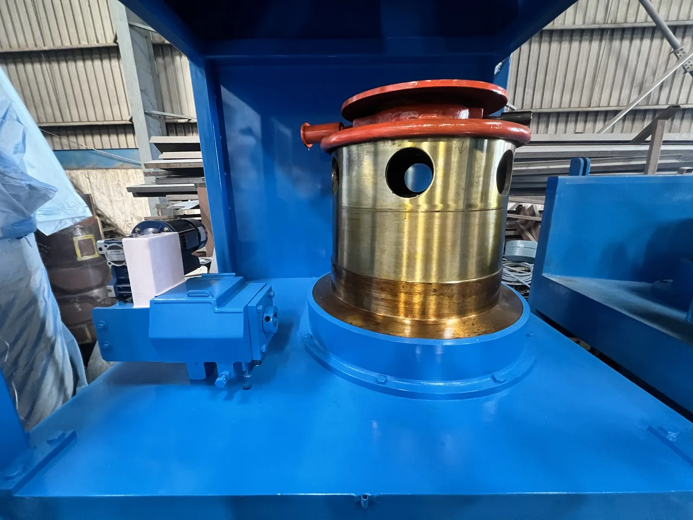
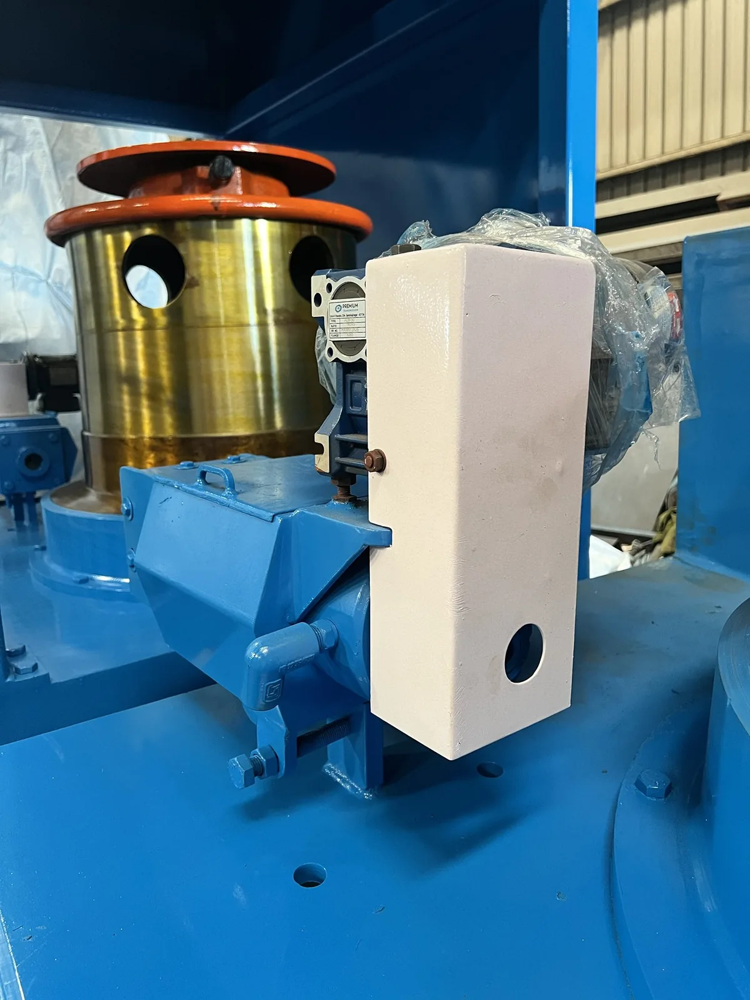

Drawing dies: wear, repolishing and when to retire a die
Die wear decides wire size, surface and breaks. How carbide dies wear, how to inspect them, when to repolish to the next size, and the records that tell you.
A drawing die is a small, cheap part that decides the size, the surface and the break rate of everything that passes through it. Most mills lose far more in wire spoiled by worn dies than they spend on the dies themselves. Good die care is a routine: inspect on a schedule, repolish early, and keep records.
The parts of a die
- The entry bell, which guides the wire and the lubricant in.
- The approach cone, where the reduction happens. Its angle, with the reduction, sets the delta factor; see die angle and reduction.
- The bearing, the short parallel land that sets the final size.
- The back relief and exit, which let the wire leave without scraping.
Steel wire is drawn mostly through tungsten carbide nibs set in steel cases. Polycrystalline or natural diamond dies are used for fine wire, where size control and die life matter most.


How a die wears
- The wear ring. A ring wears into the approach cone where the wire first touches it. As the ring deepens it changes the effective angle, the wire contact moves, the drawing force rises and the lubricant film breaks.
- Bearing wear. The bearing opens and the wire grows oversize.
- Uneven wear, from misalignment or one-sided lubrication, makes the bore oval; see size and ovality.
- Chips and cracks from shocks: weld flash passing through, a break, grit, or cold water on a hot die.
Inspect on a schedule
- Look into every die that comes off the machine with a magnifier or a die microscope: wear ring, scratches, chips.
- Check the size by drawing a short sample through it and measuring the wire, or with die gauges.
- Check the profile when the size changes or a die gives trouble. A die profile instrument, or a cast replica of the bore, shows the angle and the bearing.
- Never put a die into the box that has not been measured.
Repolish early, not late
A die with a shallow wear ring can be repolished: the bore is opened slightly to the next size, the ring polished out, and the angle and bearing restored. It goes back into service one size larger. Wait until the ring is deep and much more carbide must be removed: the jump in size is bigger, and the die may be scrap. Repolishing has to restore the profile, not just open the bore. A die with the right size and the wrong angle draws badly.
Keep die records
| Record for each die | Why |
|---|---|
| Die number, size, angle, bearing | Know what is in the box |
| Date in, and tonnes or kilometres drawn | Die life by position |
| Reason it came out | Wear, scratch, chip or size |
| Condition and repolish history | Decide repolish or scrap |
Die life by position on the machine is a diagnosis in itself. A position that wears dies much faster than its neighbours is taking too much reduction, is short of lubricant, or is out of line.
What shortens die life
| What you see on the die | Usual cause | What to do |
|---|---|---|
| Deep wear ring soon after fitting | Heavy reduction at that position | Rebalance the die sequence |
| Scratched approach | Scale or grit on the rod | Better descaling; clean soap |
| Burnt lubricant in the die | Overheating | Die and block cooling; speed |
| Oval bore | Misalignment | Align the holder with the block; a rotating die box |
| Chipped entry | Weld flash or shocks | Trim welds; check the guides |